O KORbuild tem uma massa de dados de exemplo numa conta de verdade: três construtoras, seis prestadoras que trabalham para elas e três prestadoras independentes, sem construtora. Tudo é fictício (nomes, endereços e e-mails example.com) e nenhum e-mail sai. Serve para ver as telas com movimento, e não listas vazias. As páginas abaixo mostram o que um cliente vê num dia comum de trabalho.
A construtora: Northfield Builders
O painel conta os diários do dia, os que aguardam aprovação e as obras que não relataram. A caixa vermelha aponta a obra sem o diário do último dia útil e quem é o responsável.
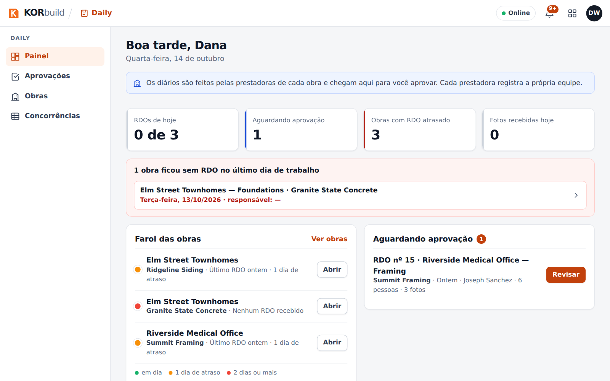
Os diários de todas as prestadoras da obra chegam em Aprovações.
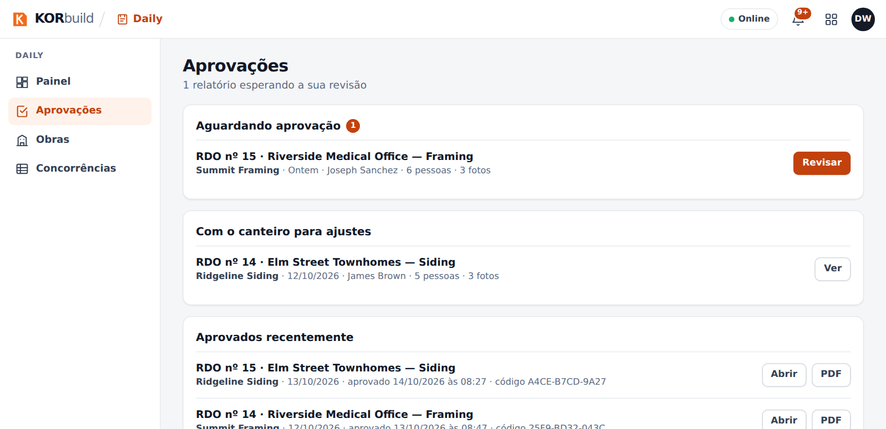
Abrir um diário mostra o clima, a equipe, os equipamentos, o serviço executado e o registro de fotos. Cada foto leva o horário, a posição GPS e a impressão digital do arquivo original. Aprovar sela o diário: ele não muda mais.
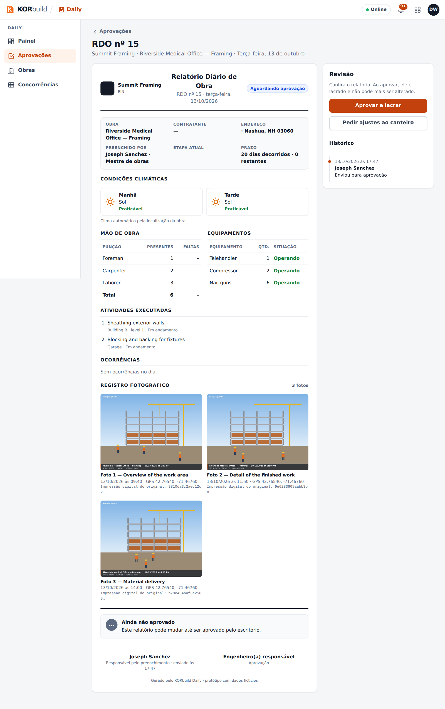
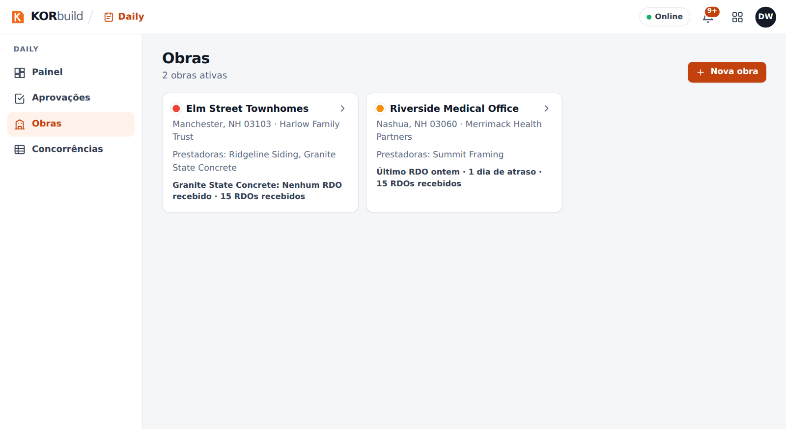
Concorrências entre empresas
Uma concorrência com duas propostas, niveladas por código de custo. O menor valor de cada linha fica em verde e um código não cotado nunca conta como zero.
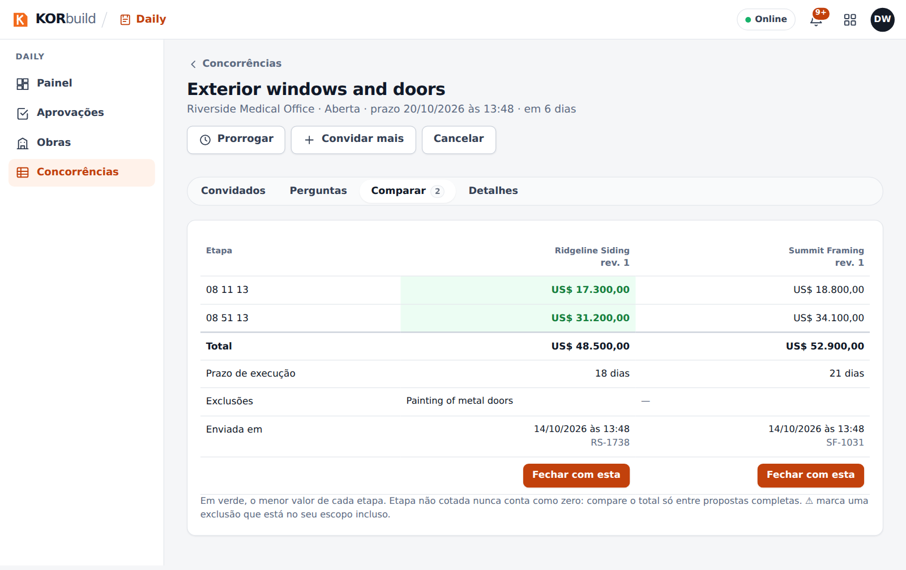
A prestadora: Summit Framing
O cronograma tem quatro etapas, uma linha de base, a previsão de término e a versão que a construtora vê. O avanço vem dos diários aprovados.
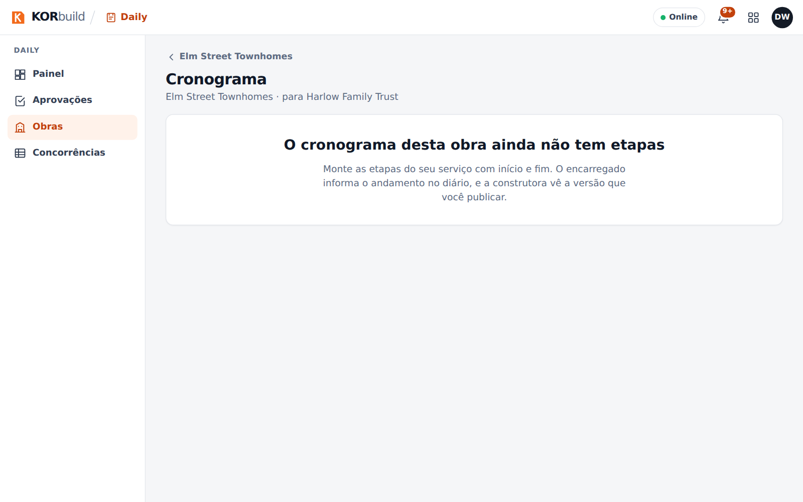
O Crew mostra quem está trabalhando agora e as batidas fora da cerca da obra. Cada item de revisão abre o dia com um toque.
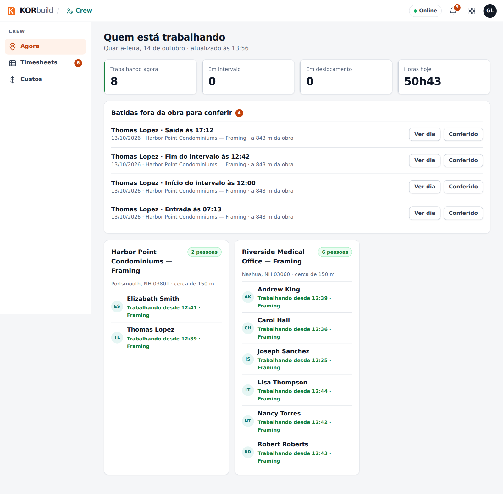
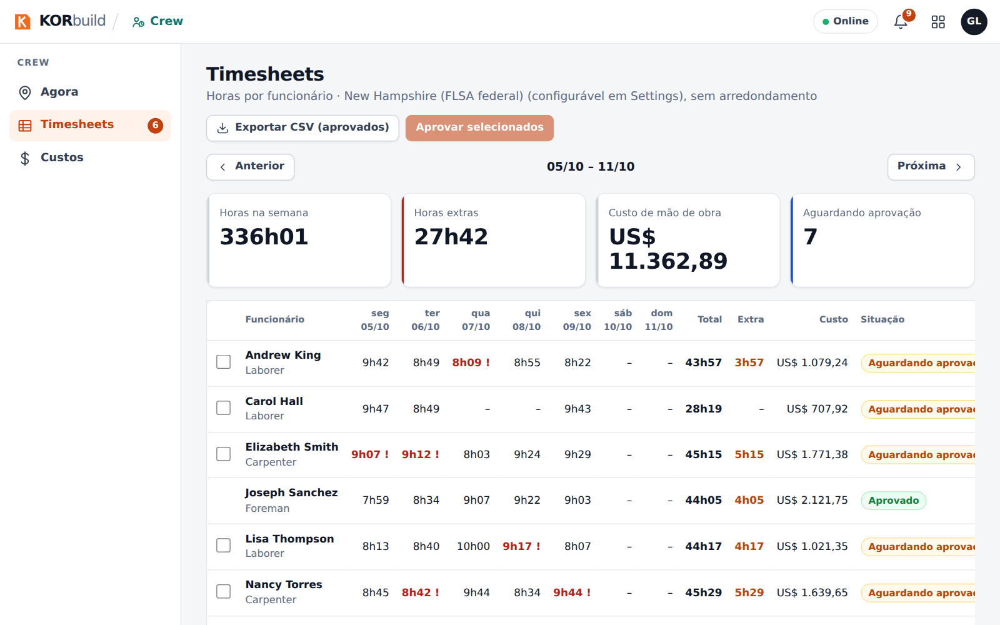
Measure
Uma prestadora de construtora e uma independente, cada uma com projetos em etapas diferentes: em orçamento, proposta enviada.
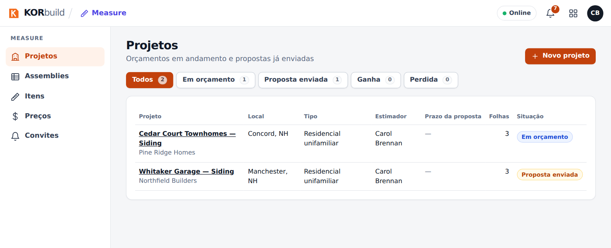
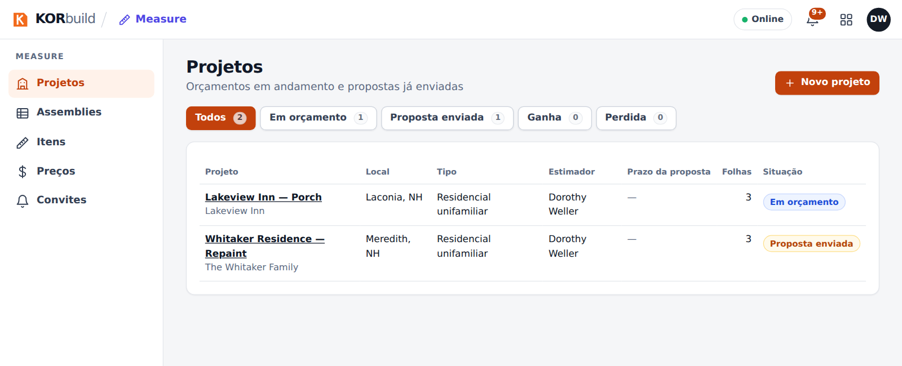
A visão da equipe do KORbuild
Na administração da plataforma as empresas de exemplo levam a etiqueta Demo. A lista também mostra uma empresa com teste vencido, uma com teste terminando em 6 dias e uma suspensa.
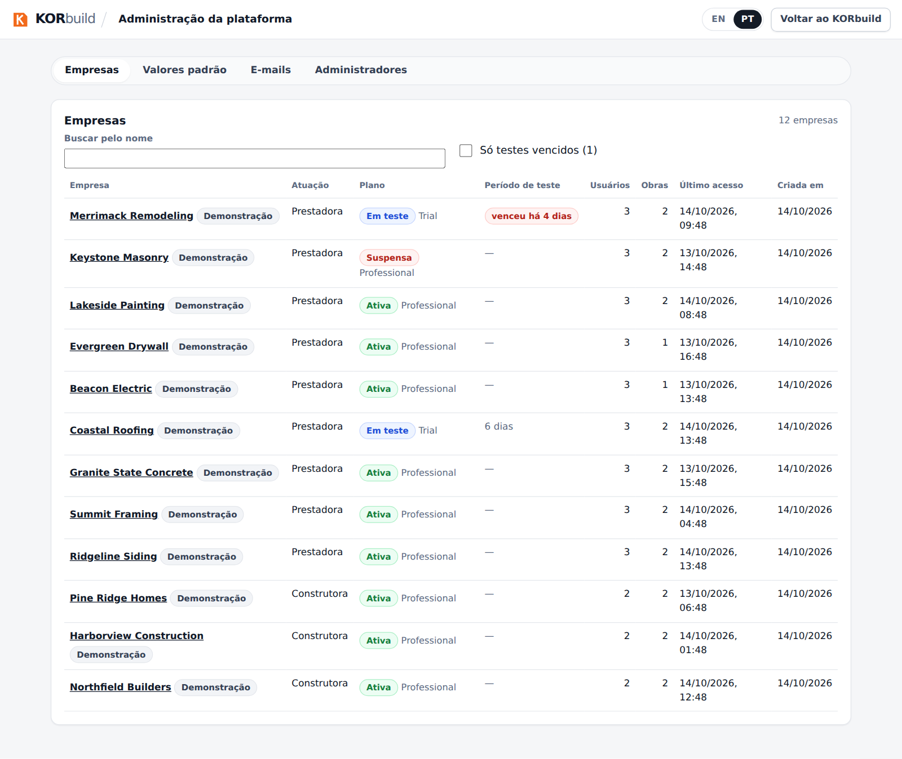
Como entrar
Os usuários de exemplo seguem o padrão demo.<empresa>.<papel>@example.com. A senha é combinada em particular com a equipe e nunca é publicada aqui. Veja docs/massa-demo.md no repositório para a lista completa e como carregar ou remover os dados.